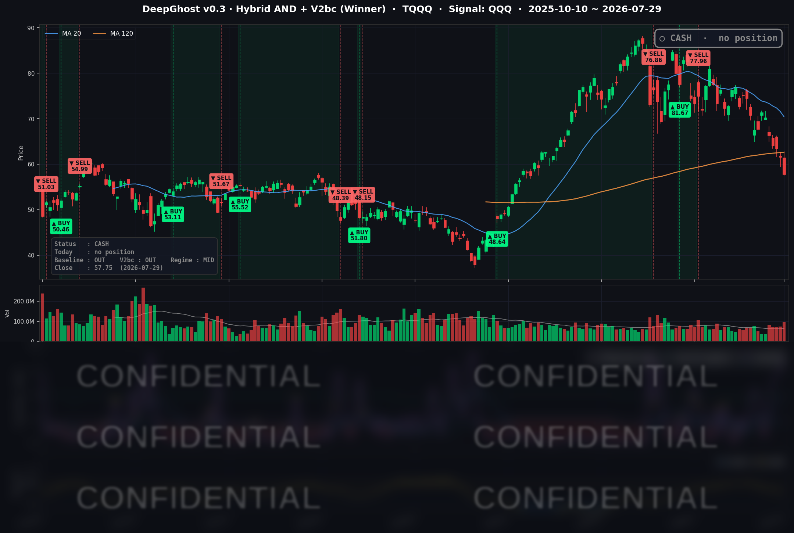

👻 매일 시그널과 히스토리를 홈페이지에서 한눈에 → www.ghostai.co.kr
반도체가 충분히 조정을 받고 이제 반등하나 기대했었는데, 케빈워시가 찬물을 끼얹었습니다. 매파 연준·중동發 유가 급등·반도체 투매가 겹치며 4대 지수가 일제히 무너졌습니다. 하지만 우리는 이미 한달 전 현금 확보로 맘 편히 이 하락장을 지켜보고 있습니다.
📊 오늘의 매매 신호
| 항목 | 내용 |
|---|---|
| 오늘 할 일 | ✅ 아무것도 안 해도 됩니다 |
| 포지션 상태 | 💵 현금 보유 중 (OUT OF POSITION) |
| 현금 보유 기간 | 2026-06-29 ~ 2026-07-29 (22거래일) |
| TQQQ 종가 | $57.75 (-6.19%) |
케빈 워시의 매파적 발언으로 모든 지수가 떨어졌습니다. 모델의 주요 지표는 근래 최고를 찍어 하락의 끝이 다가옴을 암시했습니다. 하지만 추세가 잡히지 않았습니다. 향후 5일의 주가흐름이 중요한 시기입니다. S&P 500 지수를 한번 보세요. 미국 주식은 아직 떨어질 룸이 많이 남아 있습니다.
TQQQ 시그널 — OUT OF POSITION
현재 상태: 현금 보유 중 | 신규 진입·청산 신호 없음

전략은 이날에도 TQQQ에 진입하지 않고 현금 보유를 이어갔습니다. 신호축인 QQQ 종가는 -2.04%, TQQQ는 -6.19% 급락했습니다. 하락이 3배로 증폭되는 레버리지 상품의 특성을 감안하면, 이런 날 "들어가 있지 않았다"는 사실 자체가 전략이 만들어낸 가장 큰 성과였습니다. 매수만큼이나 중요한 것이 매수하지 않는 규율이라는 점을 다시 보여준 하루였습니다.
오늘 미국 시장 — 시황 요약
지수 마감
| 지수 | 종가 | 등락률 |
|---|---|---|
| S&P 500 | 7,316.15 | -1.52% |
| 나스닥 종합 | 24,442.94 | -1.74% |
| 다우 존스 | 51,594.14 | -2.19% |
| 러셀 2000 | 2,906.31 | -1.61% |
네 개 주요 지수가 모두 하락한 전면 리스크오프 세션이었습니다. 특히 통상 방어적으로 여겨지는 대형 우량주 지수인 다우가 -2.19%로 가장 크게 밀린 점이 눈에 띕니다. 유가 급등에 따른 소비·산업재 압박과 장기 금리 상승이 밸류에이션 전반을 짓눌렀습니다.
국채 금리 동향
| 만기 | 수익률 | 전일 대비 |
|---|---|---|
| 3개월 | 3.658% | -10.2 bp |
| 10년 | 4.622% | +1.8 bp |
| 30년 | 5.143% | +4.7 bp |
단기물(3개월)이 10bp 넘게 내린 반면 장기물(10년·30년)은 올라, 금리 곡선이 우상향으로 더 가팔라졌습니다(10년-3개월 스프레드 +96.4bp). 시장은 "연준이 당장 추가 긴축은 아니지만, 유가발 인플레이션 재점화 위험은 다시 값에 반영해야 한다"는 쪽으로 움직인 셈입니다. 장기 금리 상단 상승은 고밸류 성장주에 직접적인 역풍으로 작용합니다.
연준 발언 & 금리 패스
7월 FOMC는 기준금리를 3.50~3.75%로 5회 연속 동결했지만, 표결은 9 대 3으로 세 명이 인상을 지지하며 반대했습니다. 무엇보다 신임 케빈 워시(Kevin Warsh) 의장의 첫 기자회견 톤이 매파적이었습니다. "인플레이션 목표에 소프트 타깃은 없다, 목표는 오직 2%"라며 조기 완화 기대에 선을 그었습니다. 다수 위원의 연말 금리 전망이 3.6~4.1%로, 연내 추가 인상 가능성까지 열어둔 것으로 해석됐습니다. 요약하면 시장이 예상했던 동결이었지만, 톤은 확실히 "매파적 동결"이었습니다.
오늘의 핵심 이슈
- 매파 연준 + 워시 의장 데뷔. 동결은 예상대로였으나 인상 반대표 3명과 "2% 외 타협 없음" 발언으로 조기 인하 기대가 후퇴했습니다.
- 중동 지정학 격화로 유가 급등. 사우디 유전·미군기지 공격과 호르무즈·홍해 항로 리스크가 겹치며 WTI가 +6.47%($84.39), 브렌트가 +7.50%($90.40) 뛰었습니다. 인플레이션 재점화 우려가 채권 장기물과 주식 밸류에이션을 동시에 압박했습니다.
- 메모리·반도체 투매 심화. SK하이닉스가 사상 최대 실적에도 2026년 설비투자를 50% 늘리겠다($31B)고 밝히자, 오히려 공급과잉·마진 정점 우려를 자극했습니다. 메모리·반도체 종목이 이날 지수 하락을 주도했습니다.
변동성 & 투자심리
VIX(공포지수)는 18.21에서 20.66(+13.45%)으로 뛰어 20선을 다시 넘었습니다. 최근 6거래일 중 가장 큰 하루 스파이크로, 리스크오프 강도가 확연했습니다. CNN 공포·탐욕 지수도 'Fear(공포)' 구간(약 37 관측)에 머물렀습니다.
매크로 & 원자재
- WTI 원유: $84.39 (+6.47%)
- 브렌트 원유: $90.40 (+7.50%)
- 금 선물: $4,149.50 (+2.80%) — 안전자산 수요로 금도 동반 강세
중동 확전이 유가 리스크 프리미엄을 재점화했고, 안전자산인 금이 함께 오른 점이 이날 시장의 방어적 성격을 잘 보여줍니다.
주요 종목 동향
| 종목 | 종가 | 등락률 | 비고 |
|---|---|---|---|
| MU | $739.00 | -9.94% | 당일 최대 낙폭. 메모리 마진 정점·공급과잉 우려 |
| INTC | $81.88 | -5.12% | 반도체 투매, 낙폭 상위 |
| QCOM | $155.68 | -4.42% | 반도체 동반 약세 |
| NVDA | $190.01 | -3.55% | AI 반도체 투매·중국 경쟁 우려 |
| TSLA | $298.32 | -2.97% | 위험회피·고베타 압박 |
| AVGO | $370.32 | -2.78% | 반도체 동반 약세 |
| AMZN | $226.65 | -1.82% | 익일(7/30) 장 마감 후 어닝 |
| META | $585.61 | -1.31% | 당일 장 마감 후 어닝, AI 투자 경계 |
| MSFT | $390.54 | -0.71% | 당일 장 마감 후 어닝, 상대적 선방 |
| AAPL | $338.19 | -0.56% | 익일(7/30) 장 마감 후 어닝, 대형주 중 방어적 |
| GOOGL | $336.71 | +0.90% | 커버리지 내 상승 |
| NFLX | $73.63 | +1.71% | 커버리지 내 최강, 홀로 버팀 |
반도체·메모리가 낙폭을 주도한 가운데 대형 인터넷주 일부(GOOGL·NFLX)만 상승 흐름을 유지했습니다. 하루 뒤인 7월 30일에는 오전 8시 30분(ET) 근원 PCE 물가·2분기 GDP·신규 실업수당 청구가 한꺼번에 나오고, 장 마감 후 애플과 아마존 어닝이 대기하고 있어 변동성이 이어질 수 있는 국면입니다.
Ghost.AI — Quantitative AI Investment
Model: DeepGhost v0.3 | Transformer-Based Deep Learning
Coverage: 13 tickers | Updated every trading day after US market close
⚠️ 본 자료는 정보 제공 목적으로만 작성되었으며 투자 권유가 아닙니다. 모든 투자의 책임은 투자자 본인에게 있습니다. 과거 성과가 미래 수익을 보장하지 않습니다.
[유의사항]
- 본 서비스는 불특정 다수를 대상으로 발행되는 단방향 정보 제공 서비스이며, 투자자 개인의 재산 상황·투자 목적·위험 선호도를 반영한 개별 투자 조언이 아닙니다.
- 고스트에이아이 주식회사는 고객과 쌍방향 의사소통(개별 상담, 맞춤형 자문 등)을 제공하지 않습니다.
- 본 콘텐츠는 투자 권유 또는 매매 주문의 청약·청약의 권유에 해당하지 않으며, 최종 투자 판단 및 그에 따른 손익의 책임은 전적으로 투자자 본인에게 있습니다.
고스트에이아이 주식회사